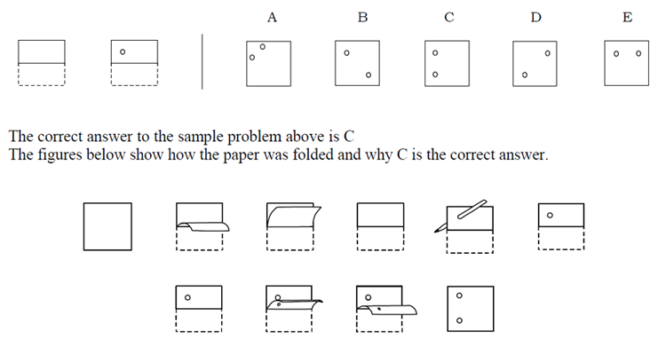

<%@ page language="java" contentType="text/html; charset=ISO-8859-1"
pageEncoding="ISO-8859-1"%>
Paper Folding Test
Paper Folding Test (Instruction)
- There are 2 problem sets.
- Each problem set has 10 questions.
- You have 3 minutes for each problem set.
- A countdown timer always shows up at the very top of a page.
- When you finish every question, click "SUBMIT" to go to next problem set.
- However, when time is over, the system will automatically redirect you to next problem set.
- You will get +1 for each correct answer.
- Whereas, you will get -0.33 for each incorrect answer.
- If you are ready, click "START".
Example Question
- In this test you are to imagine the folding and unfolding of pieces of paper.
- In each problem in the test there are some figures drawn at the left of a vertical line and there are others drawn at the right of the line.
- The figures at the left represent a square piece of paper being folded, and the last of these figures has one or two small circles drawn on it to show where the paper has been punched.
- Each hole is punched through all the thicknesses of paper at that point.
- One of the five figures on the right of the vertical line shows where the holes will be when the paper is completely unfolded.
- Let's try the following example:
